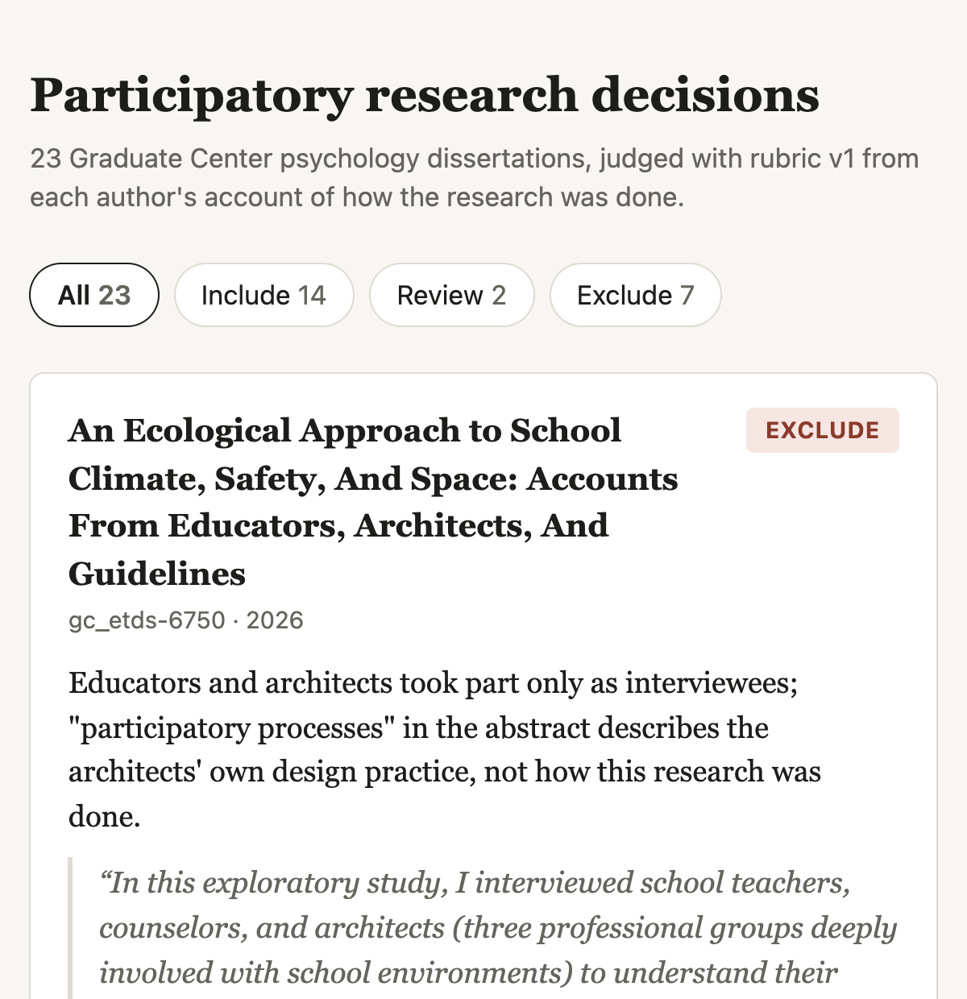

- Which GC psychology dissertations did participatory research?
- All three of these use the word in the abstract
- The word alone doesn't tell you whether community members helped
DHUM / DATA 70600 · Class 7
Include
Community members helped design, conduct, analyze, or share the research.
Exclude
They took part only as participants, or "participatory" describes the topic.
Review
The author claims participatory principles without saying what community members did.
Apply the rubric to each dissertation, one at a time. For each one, extract the text, find where the author describes how the research was done, and read that part before deciding. Do not use keyword matching.
Save the decisions in a new file with one row per dissertation: the id, the decision, a quoted passage as evidence with its PDF page number, a one-sentence reason, and the rubric version. Do not change dissertations.csv.

Coding interviews
Apply your codebook to each transcript, with quotes.
A dataset from sources
Pull names, dates, and places from letters into a table.
A literature review
Search, screen, and summarize studies against your criteria.
Comparing versions
Mark every difference between two editions of a text.
Mapping
Place each location in a set of letters on a map.
Counting terms
Find each use of a term and count it by decade.